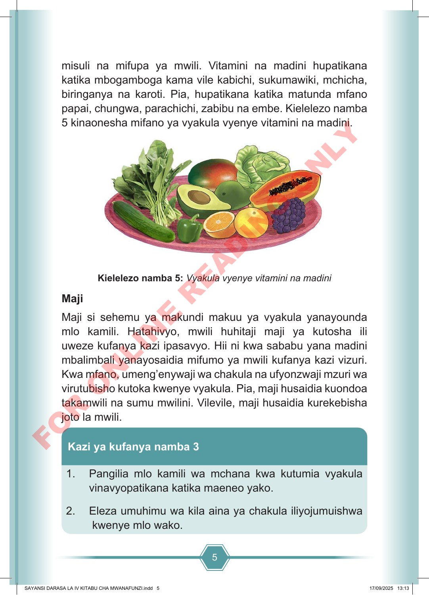

5 misuli na mifupa ya mwili. Vitamini na madini hupatikana katika mbogamboga kama vile kabichi, sukumawiki, mchicha, biringanya na karoti. Pia, hupatikana katika matunda mfano papai, chungwa, parachichi, zabibu na embe. Kielelezo namba 5 kinaonesha mifano ya vyakula vyenye vitamini na madini. Kielelezo namba 5: Vyakula vyenye vitamini na madini Maji Maji si sehemu ya makundi makuu ya vyakula yanayounda mlo kamili. Hatahivyo, mwili huhitaji maji ya kutosha ili uweze kufanya kazi ipasavyo. Hii ni kwa sababu yana madini mbalimbali yanayosaidia mifumo ya mwili kufanya kazi vizuri. Kwa mfano, umeng’enywaji wa chakula na ufyonzwaji mzuri wa virutubisho kutoka kwenye vyakula. Pia, maji husaidia kuondoa takamwili na sumu mwilini. Vilevile, maji husaidia kurekebisha joto la mwili. 1. Pangilia mlo kamili wa mchana kwa kutumia vyakula vinavyopatikana katika maeneo yako. 2. Eleza umuhimu wa kila aina ya chakula iliyojumuishwa kwenye mlo wako. Kazi ya kufanya namba 3 SAYANSI DARASA LA IV KITABU CHA MWANAFUNZI.indd 5 SAYANSI DARASA LA IV KITABU CHA MWANAFUNZI.indd 5 17/09/2025 13:13 17/09/2025 13:13 F O R O N L I N E R E A D I N G O N L Y